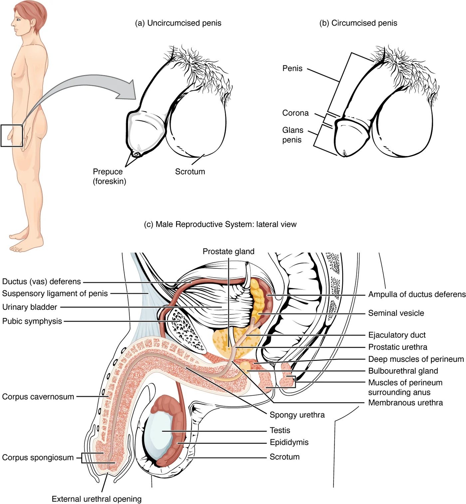
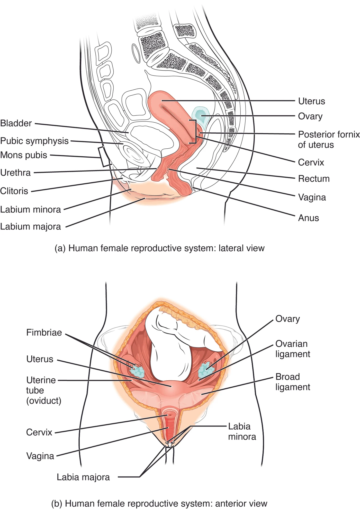

The Reproductive System
TEAS objective S.1.7 · Human Anatomy & Physiology
What the TEAS expects: you can trace the path of sperm and of the egg, say where fertilization and implantation happen, and match the main reproductive hormones to their effects.
1. Male reproductive system
Path of sperm:
- Testes: sperm are made in the seminiferous tubules. Interstitial (Leydig) cells between the tubules make testosterone.
- Epididymis: sperm mature and are stored.
- Vas (ductus) deferens: carries sperm up from the scrotum into the pelvis.
- Ejaculatory duct, then the urethra, which carries both urine and semen (not at the same time) out through the penis.
Accessory glands add fluid to make semen: the seminal vesicles (fructose for energy), the prostate gland and the bulbourethral glands.
Why the testes sit in the scrotum: sperm production needs a temperature a few degrees below core body temperature.

Check 1: Put in order: urethra, epididymis, seminiferous tubules, vas deferens. Answer at the bottom of the page.
2. Female reproductive system
Path of the egg: ovary → released at ovulation → swept in by the fimbriae → uterine tube (where fertilization happens) → uterus (where the embryo implants).
- Ovaries: produce eggs (oocytes) and the hormones estrogen and progesterone.
- Uterine (fallopian) tubes: finger-like fimbriae sweep the released egg into the tube. Fertilization normally happens here.
- Uterus: a muscular organ where the embryo implants in the inner lining, the endometrium. Its thick muscle layer (myometrium) contracts during labor.
- Cervix: the narrow lower part of the uterus that opens into the vagina.
- Vagina: the birth canal; receives sperm.

3. Gametes and fertilization
- Gametes (sperm and egg) are made by meiosis, so each has half the usual number of chromosomes (23 in humans).
- At fertilization, sperm and egg combine to form a zygote with the full 46 chromosomes.
- The zygote divides as it travels down the uterine tube; about a week after fertilization the resulting ball of cells (a blastocyst) implants in the endometrium.
4. Hormones
| Hormone | Made by | Main effect |
|---|---|---|
| FSH (follicle-stimulating hormone) | Anterior pituitary | Stimulates egg follicle development; supports sperm production |
| LH (luteinizing hormone) | Anterior pituitary | A surge triggers ovulation; stimulates testosterone production |
| Estrogen | Ovaries (developing follicles) | Builds up the endometrium; female secondary sex characteristics |
| Progesterone | Ovaries (corpus luteum after ovulation) | Maintains the endometrium for pregnancy |
| Testosterone | Testes | Sperm production; male secondary sex characteristics |
| Oxytocin | Posterior pituitary (made in the hypothalamus) | Uterine contractions during labor; milk let-down |
| hCG (human chorionic gonadotropin) | The early embryo / placenta | Keeps the corpus luteum making progesterone in early pregnancy; it is what pregnancy tests detect |
In a typical 28-day cycle, ovulation happens around day 14. GnRH from the hypothalamus drives the pituitary to release FSH and LH.
Why the period happens: if no embryo implants, the corpus luteum breaks down, progesterone drops, and the endometrium is shed (menstruation).
Check 2: Which hormone surge directly triggers ovulation? Answer at the bottom.
Common traps
- Saying fertilization happens in the uterus. It normally happens in the uterine tube; implantation happens in the uterus.
- Saying sperm are made in the epididymis. They mature and are stored there; they are made in the seminiferous tubules.
- Mixing up FSH and LH. The LH surge triggers ovulation.
- Forgetting the urethra is shared in males by the urinary and reproductive systems.
Learn it properly
- Male system: OpenStax Anatomy and Physiology 2e, Section 27.1 Anatomy and Physiology of the Testicular Reproductive System: OpenStax (opens in a new tab)
- Female system: Section 27.2 Anatomy and Physiology of the Ovarian Reproductive System: OpenStax (opens in a new tab)
Check answers
- Seminiferous tubules, epididymis, vas deferens, urethra.
- LH (luteinizing hormone).
ESCC TEAS Prep · Original study material written for Eastern Shore Community College. Figures from OpenStax, Anatomy and Physiology 2e, licensed CC BY 4.0.